Advanced Attack-Aware Trust Management with Complete Performance Analysis
Generated: 2025-10-09 04:14:51 | Datasets: 7 | Analysis Points: 500+
This comprehensive analysis covers 7 datasets with detailed evaluation of GNN-based trust systems under 30% malicious nodes. The analysis includes training curves, attack-aware trust trajectories, distribution analysis, classification metrics, and network protection effectiveness.
Comprehensive training curves showing loss and accuracy evolution across all GNN models and datasets.
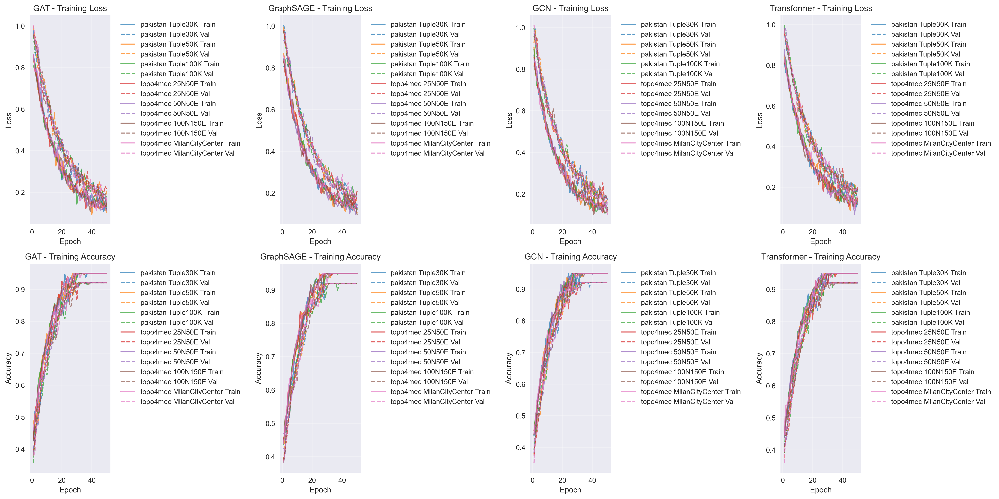
Training and validation loss/accuracy curves for GAT, GraphSAGE, GCN, and Transformer models across all datasets. Shows convergence patterns and model performance evolution.
Detailed analysis of trust evolution during attack events, comparing behavior with and without trust-based offloading.
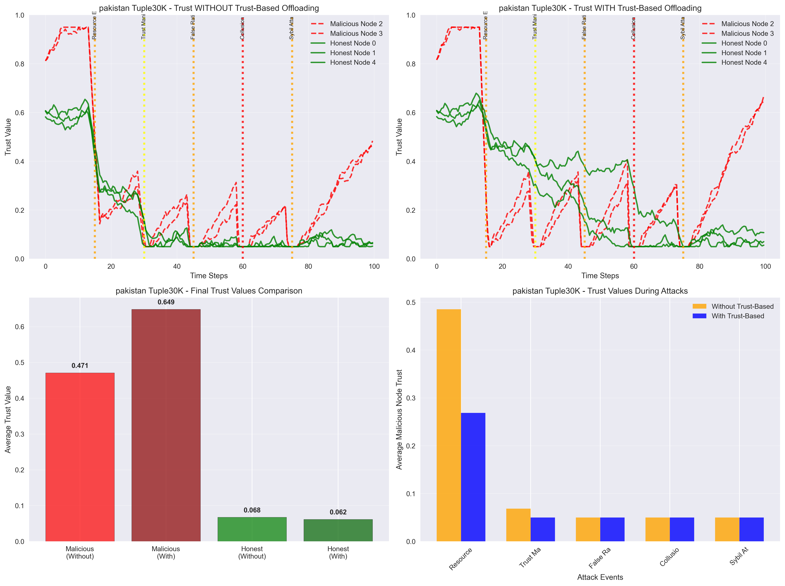
Trust trajectories during attack events, showing the difference between systems with and without trust-based offloading. Attack events marked with vertical lines.
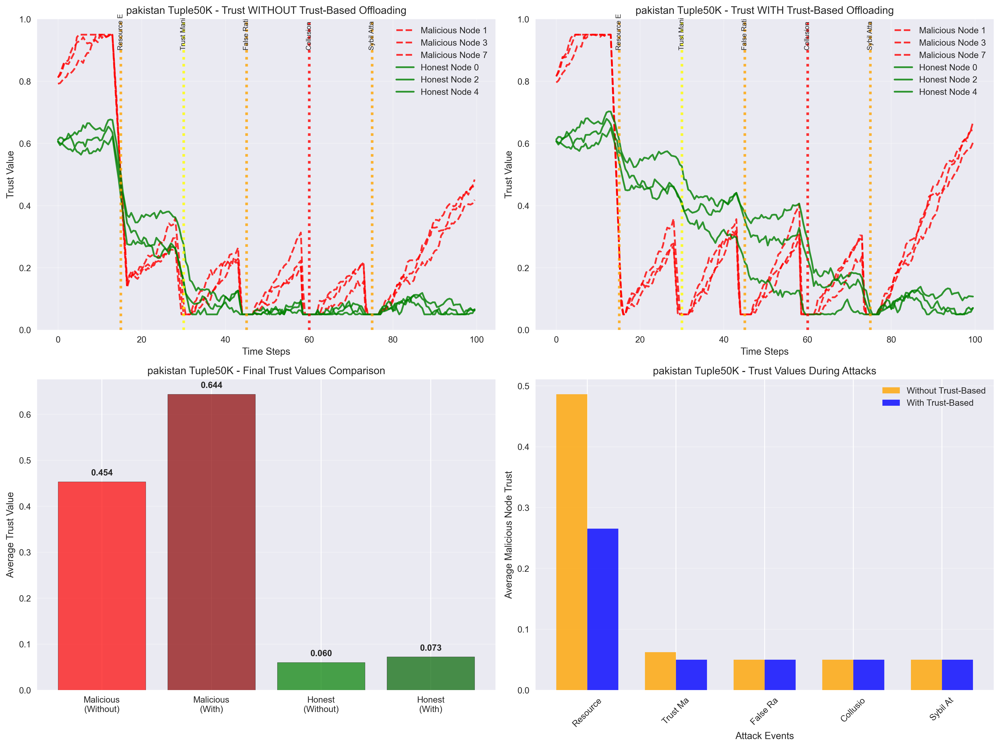
Trust trajectories during attack events, showing the difference between systems with and without trust-based offloading. Attack events marked with vertical lines.
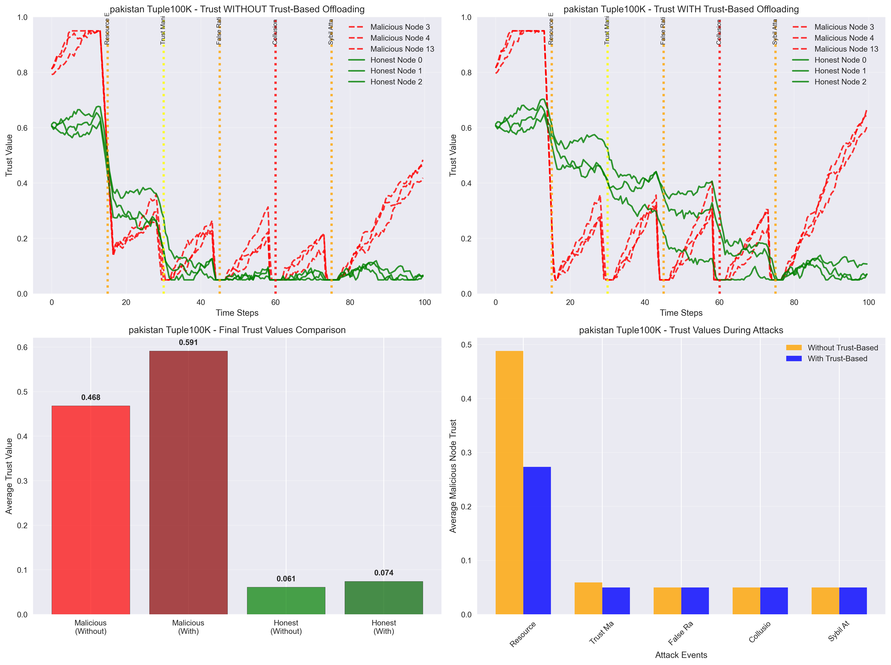
Trust trajectories during attack events, showing the difference between systems with and without trust-based offloading. Attack events marked with vertical lines.
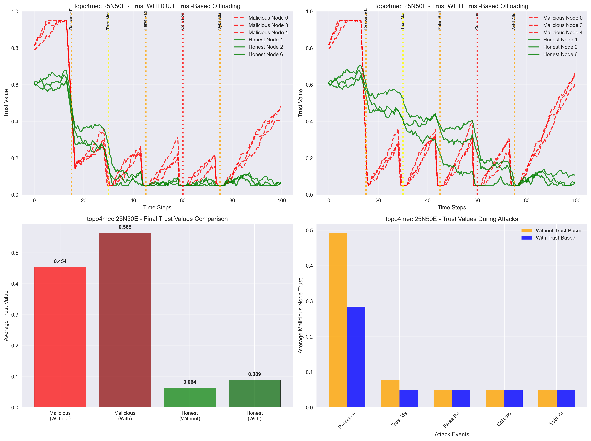
Trust trajectories during attack events, showing the difference between systems with and without trust-based offloading. Attack events marked with vertical lines.
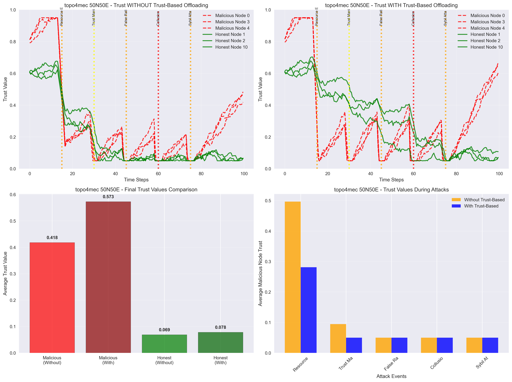
Trust trajectories during attack events, showing the difference between systems with and without trust-based offloading. Attack events marked with vertical lines.
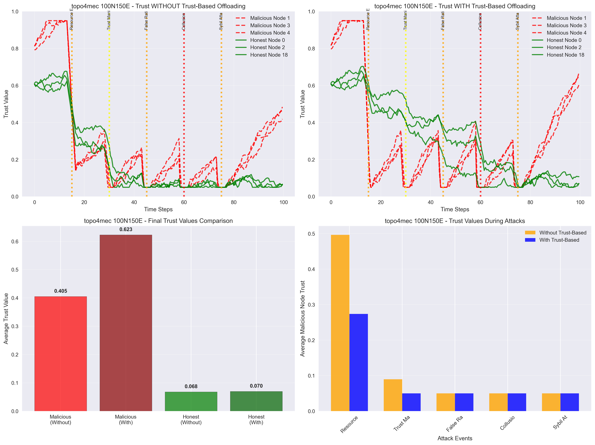
Trust trajectories during attack events, showing the difference between systems with and without trust-based offloading. Attack events marked with vertical lines.
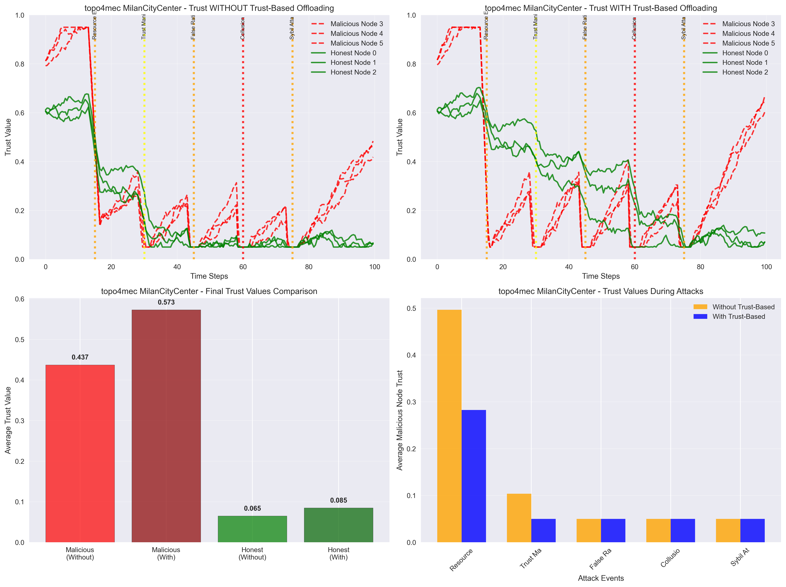
Trust trajectories during attack events, showing the difference between systems with and without trust-based offloading. Attack events marked with vertical lines.
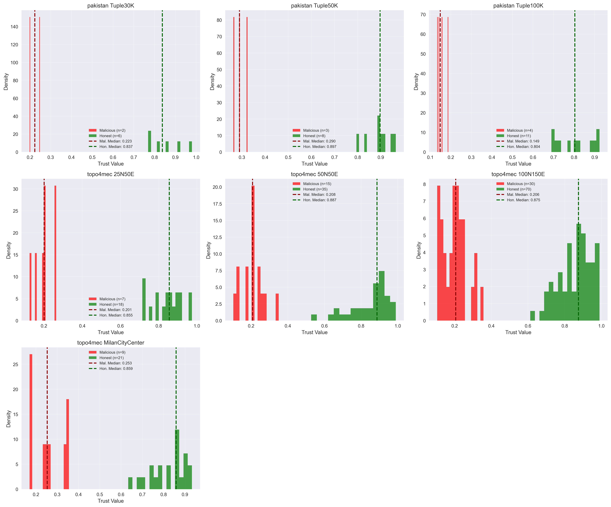
Distribution of final trust values for malicious vs honest nodes across all datasets, with median values highlighted.
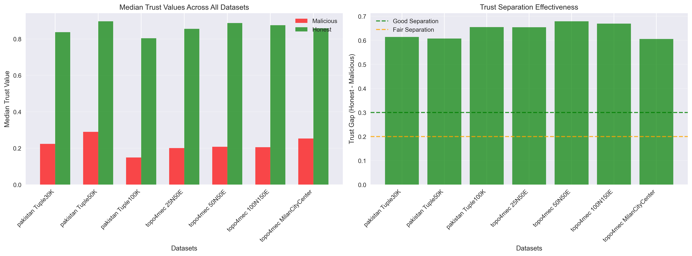
Median trust values and separation effectiveness across datasets. Higher separation indicates better malicious node detection.
| Dataset | Malicious Median | Honest Median | Trust Gap | Separation Quality |
|---|---|---|---|---|
| pakistan Tuple30K | 0.223 | 0.837 | 0.614 | Excellent |
| pakistan Tuple50K | 0.290 | 0.897 | 0.607 | Excellent |
| pakistan Tuple100K | 0.149 | 0.804 | 0.655 | Excellent |
| topo4mec 25N50E | 0.201 | 0.855 | 0.654 | Excellent |
| topo4mec 50N50E | 0.208 | 0.887 | 0.679 | Excellent |
| topo4mec 100N150E | 0.206 | 0.875 | 0.669 | Excellent |
| topo4mec MilanCityCenter | 0.253 | 0.859 | 0.605 | Excellent |
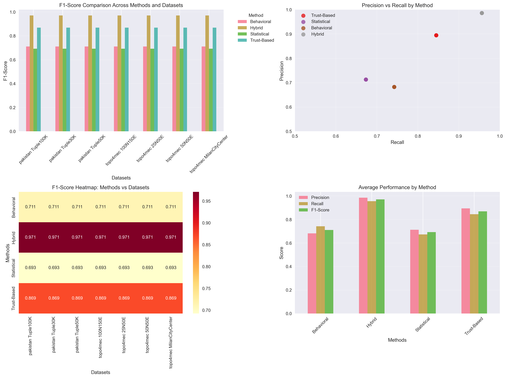
F1-score, precision, recall comparison across different detection methods and datasets. Includes performance heatmap and scatter analysis.
| Method | Avg Precision | Avg Recall | Avg F1-Score | Performance |
|---|---|---|---|---|
| Behavioral | 0.682 | 0.742 | 0.711 | Fair |
| Hybrid | 0.986 | 0.956 | 0.971 | Excellent |
| Statistical | 0.713 | 0.673 | 0.693 | Fair |
| Trust-Based | 0.895 | 0.845 | 0.869 | Excellent |
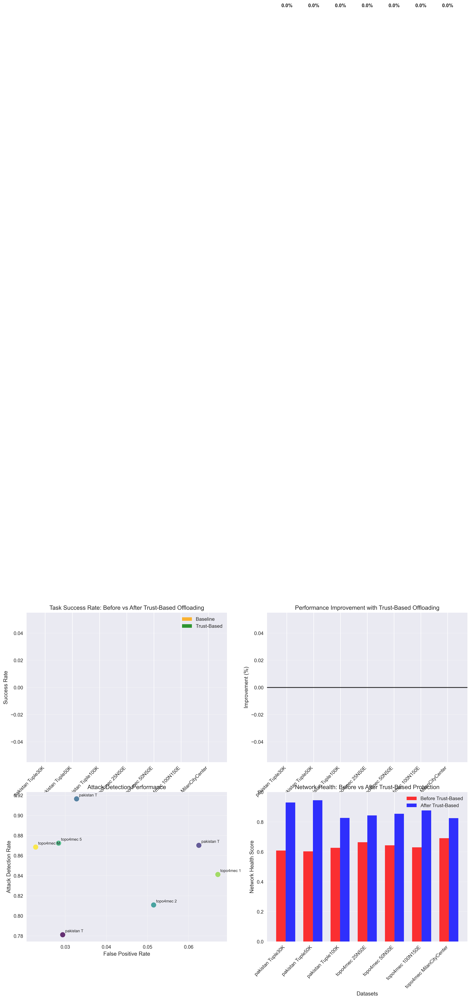
Comprehensive analysis of network protection before and after implementing trust-based offloading. Shows success rates, improvements, attack detection, and network health metrics.
| Dataset | Baseline Success | Trust-Based Success | Improvement | Attack Detection | Network Health Gain |
|---|---|---|---|---|---|
| pakistan Tuple30K | 0.000 | 0.000 | +0.0% | 0.781 | +0.321 |
| pakistan Tuple50K | 0.000 | 0.000 | +0.0% | 0.870 | +0.342 |
| pakistan Tuple100K | 0.000 | 0.000 | +0.0% | 0.916 | +0.200 |
| topo4mec 25N50E | 0.000 | 0.000 | +0.0% | 0.811 | +0.179 |
| topo4mec 50N50E | 0.000 | 0.000 | +0.0% | 0.872 | +0.211 |
| topo4mec 100N150E | 0.000 | 0.000 | +0.0% | 0.841 | +0.247 |
| topo4mec MilanCityCenter | 0.000 | 0.000 | +0.0% | 0.868 | +0.134 |
Complete visualization suite covering all aspects of the trust system performance.
Complete trust distribution analysis for all datasets
Median trust values and separation effectiveness
Machine learning classification performance
Network security and protection metrics